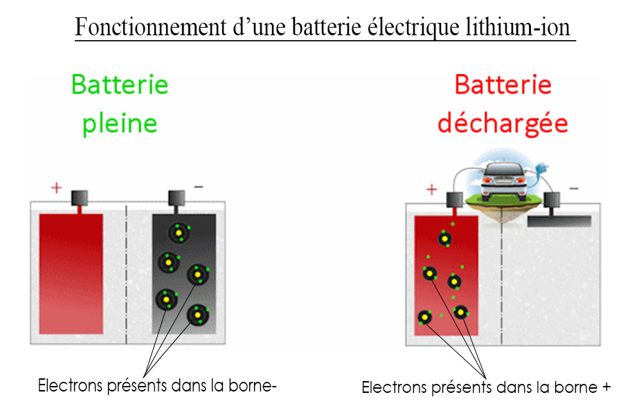
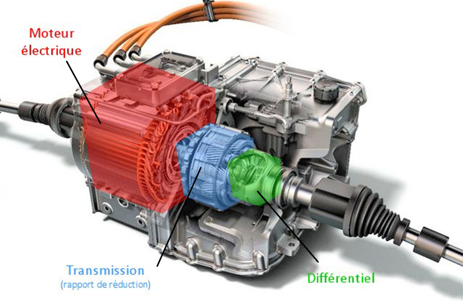

Les principes de fonctionnement de la voiture électrique
Les principes de fonctionnement de la voiture électrique
Faire avancer un véhicule demande de l’énergie. Cette énergie peut provenir de nombreuses sources : les mollets pour la marche à pied ou le vélo, le pétrole pour les voitures à moteur thermique ou l’électricité pour les véhicules électriques.
Le principe de la voiture électrique est finalement des plus simples. Au lieu d'un moteur thermique (à essence ou diesel), elle est équipée d'un moteur électrique alimenté par un accumulateur d’énergie (c’est un système électrochimique servant à stocker l’énergie, dans notre cas, il s’agit de la batterie) intégrée au véhicule.
Pour fonctionner la voiture électrique a besoin d’une batterie :
C'est l’appareil qui accumule l'énergie électrique grâce à une solution chimique. On utilise les batteries au Lithium, il s'agit d'avoir une solution chimique où il y a un échange d’électrons. Les électrons passent de la borne – à la borne + lorsque la batterie est utilisée. Lors de la recharge de la batterie, les électrons de la borne + passe à la borne -. Ce processus s’intitule l’oxydo-réduction que nous traiterons plus en détail dans la partie dédiée à la batterie.
Mais une batterie lithium-ion ne peut pas fonctionner sans moteur électrique :
Le moteur électrique ayant une plage de fonctionnement très élevée (16000 t/min sur une Model S par exemple) et un couple disponible rapidement, il n'était pas indispensable de produire une boîte de vitesse. En effet, pas besoin de puissance supplémentaire puisque le fort régime permet d’obtenir une puissance suffisante (la puissance est le produit du régime (= vitesse de rotation des roues) et du couple (=force de mouvement de rotation du moteur)).
Le rythme du moteur électrique n'est pas exactement calé sur celui des roues, il y a ce que l'on appelle un réducteur. Sur une Tesla Model S il est de 10 :1 environ, c'est à dire que la roue va tourner 10 fois moins vite que le moteur électrique. Après ce réducteur, il y a enfin le différentiel qui permet de faire tourner les roues à des vitesses différentes.
Image représentant un moteur électrique, une transmission et un différentiel :
